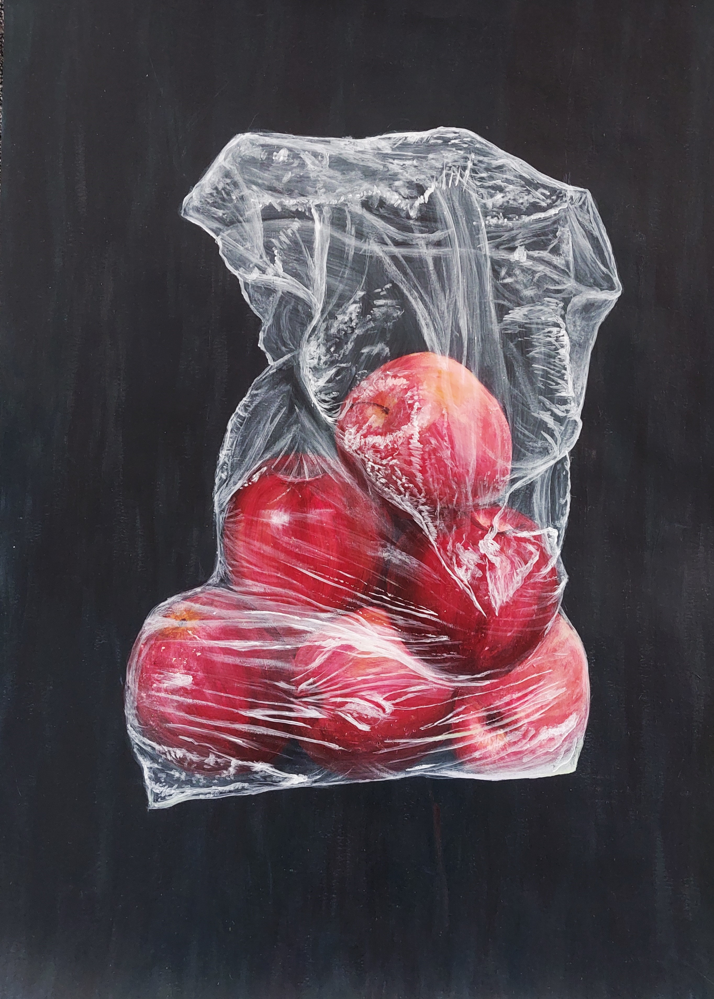
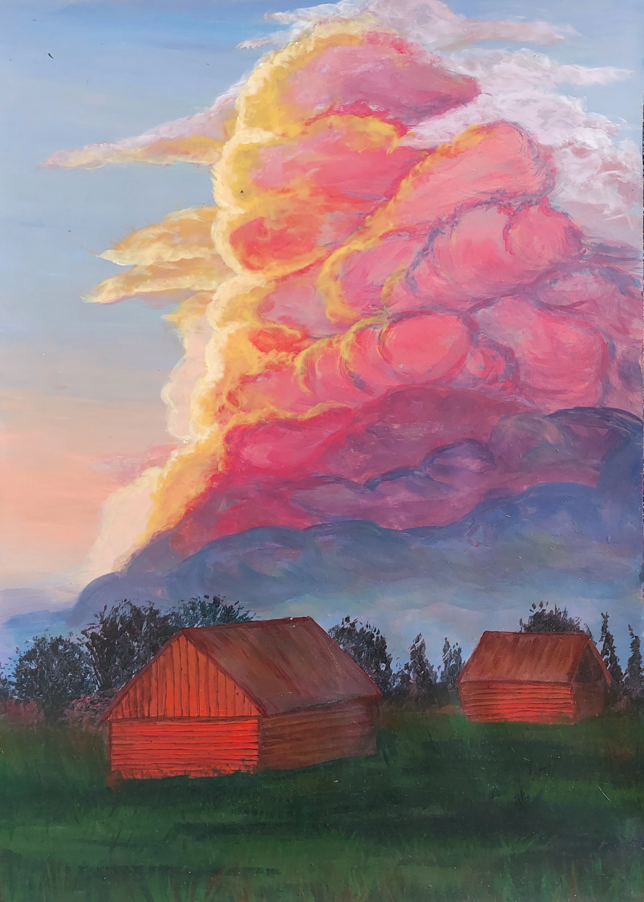
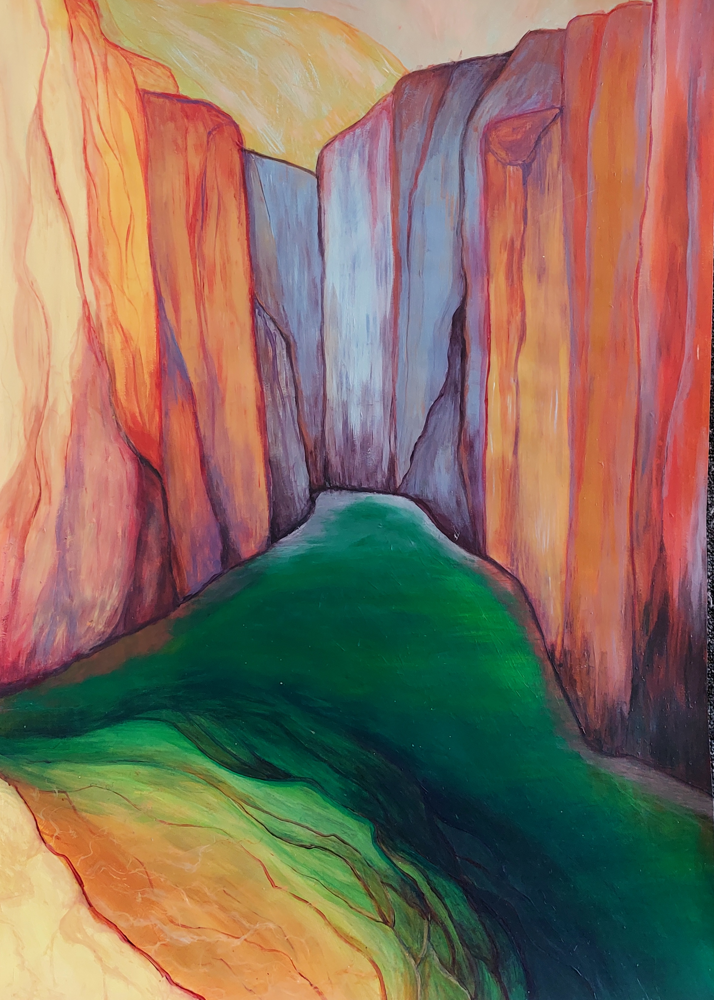
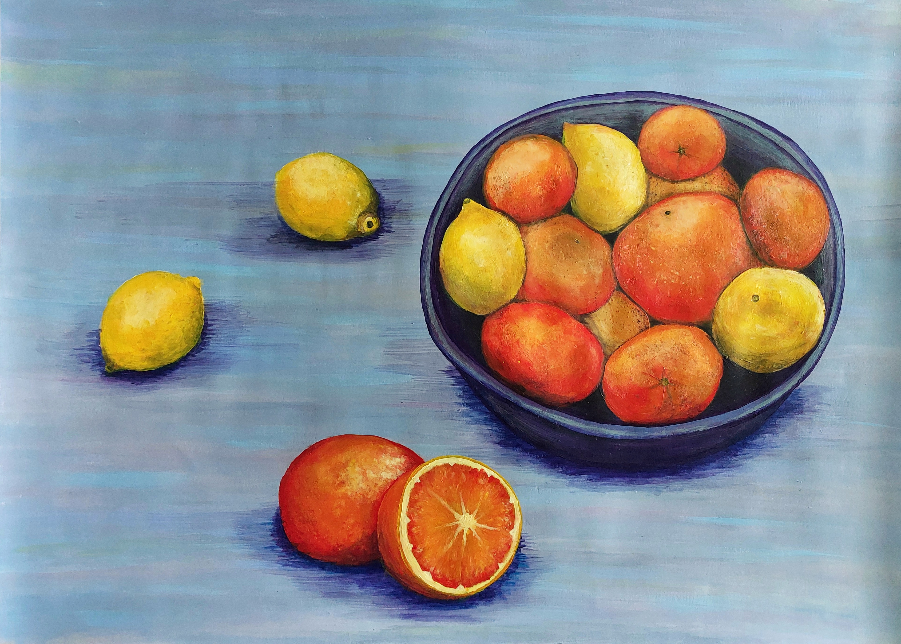
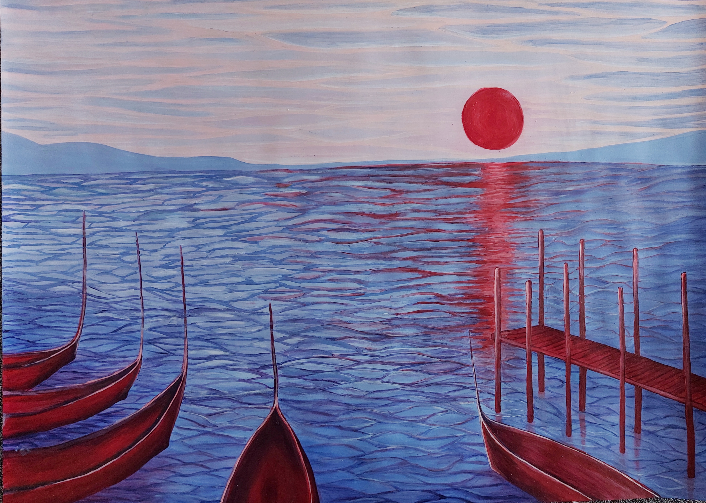
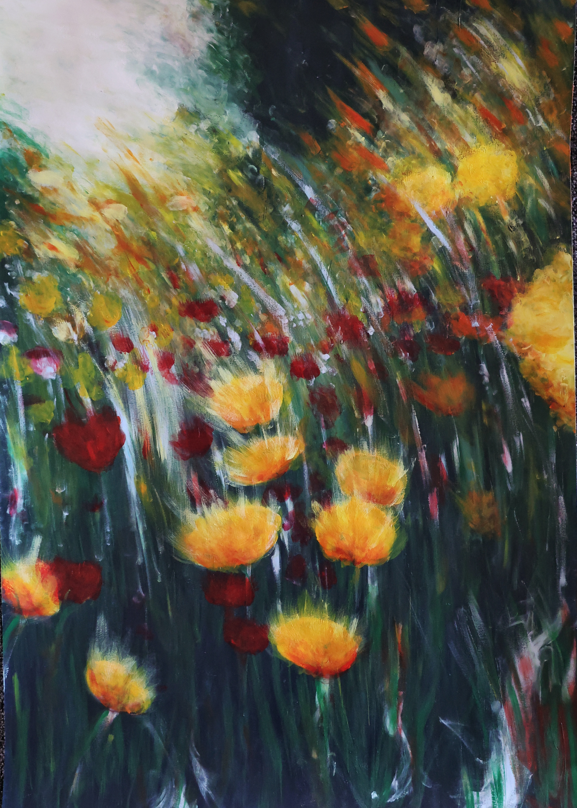
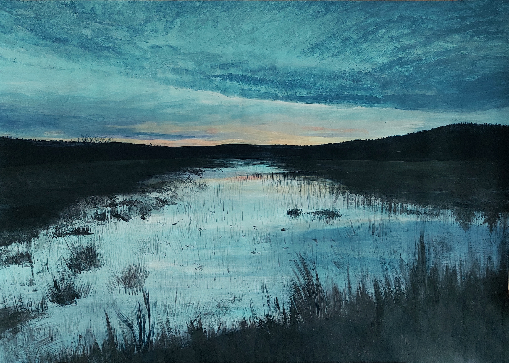

Design
I’m an artist passionate about creating both digital and physical designs that resonate with purpose and beauty. My work often intersects with environmental projects, where I focus on crafting their visual identity and branding. With a background in graphic design and environmental studies, I bring a rare combination of creativity and sustainability expertise to every project.
Aesthetics come naturally to me, and I have an intuitive sense for design and energy, ensuring my creations not only look stunning but also feel meaningful.







